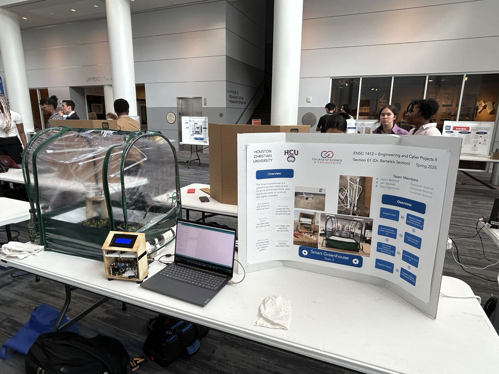

Smart Green House
A half-semester engineering project where our team built an Arduino-powered greenhouse system capable of monitoring soil conditions, managing automatic watering, controlling growth lights, circulating air, and recycling water while supporting the successful growth of multiple flower species.
Project Story
This project was developed during freshman year and required both technical engineering and public presentation. We had to design the greenhouse, build the hardware systems, wire and solder components, program the Arduino logic, and successfully grow flowers over time to prove the system actually worked.

The Goal
The main objective was to create a greenhouse system capable of intelligently supporting plant growth with minimal manual intervention. The greenhouse needed to monitor soil moisture, read reservoir levels, automatically water the flowers, control growth lights, and circulate air to help prevent scorching.
The project was not simply a visual prototype. We had to successfully grow multiple flower types according to their seed-specific needs, which required long-term testing and environmental consistency.
Command Box and Wiring
The wooden command box functioned as the control station for the greenhouse. It housed the Arduino hardware, relay switches, LCD screen, and internal wiring used to manage the system.
Building this section required more than programming. We practiced soldering, carpentry, hardware organization, and presentation design while ensuring the system remained functional and visually clean for public demonstration.
Rainfall Watering System
One of the more unique design decisions was the rainfall-style watering system. Water tubing from the pump was routed across the top of the greenhouse so the water would fall down naturally like rain instead of being dumped directly into the soil.
The system intelligently watered plants based on soil moisture readings while also monitoring the reservoir to prevent the pump from activating if water levels became too low.
Automation and Sensors
The greenhouse relied on sensors and automation logic to make environmental decisions. Soil moisture values and reservoir levels were continuously monitored so the greenhouse could respond automatically instead of relying entirely on manual interaction.
- Soil moisture readings
- Reservoir level monitoring
- Automatic water pump activation
- Relay-controlled outputs
- LCD display feedback
Embedded System Logic
The greenhouse used Arduino-based control logic to continuously read sensor values and determine when the system should activate the watering pump. Moisture readings and reservoir levels were compared against threshold values to automate plant care.
One important engineering feature was the protection logic. The system only activated the pump if the soil was dry AND the reservoir contained enough water, preventing the pump from running dry.
if (moistureVal > MOISTURE_DRY_THRESHOLD &&
waterLevelVal > RESERVOIR_LOW_LEVEL) {
digitalWrite(PUMP_PIN, HIGH);
isPumpOn = true;
delay(4000);
digitalWrite(PUMP_PIN, LOW);
}The LCD screen rotated between system states including soil condition, reservoir warnings, and live pump status, turning the wooden control box into a functioning greenhouse control panel.
Lighting and Climate Control
The greenhouse also controlled plant growth LED lights and used fans to continuously circulate air throughout the enclosure. This helped regulate heat buildup from the grow lights and reduced the risk of scorching the flowers.
We successfully grew multiple flower types including magnolias and poppies while adapting the greenhouse environment to match their seed-specific needs.
Presentation and Engineering Experience
Since this was a freshman engineering project, we had to publicly present the greenhouse system in front of a large audience. The project took roughly half a semester to complete because we not only had to build the system, but also prove that it could sustain living flowers over time.
This project became one of my earliest experiences connecting software, embedded systems, hardware engineering, wiring, carpentry, and presentation skills into a single working system.
Skills Used
Core Systems
What This Project Taught Me
This greenhouse project taught me how software can directly interact with physical systems. Instead of simply writing code that displayed information on a screen, the logic controlled pumps, fans, sensors, relay switches, and environmental behavior inside a real enclosure.
It also taught me debugging, hardware integration, sensor calibration, teamwork, wiring organization, and how much patience is required when engineering systems that must reliably operate over long periods of time.